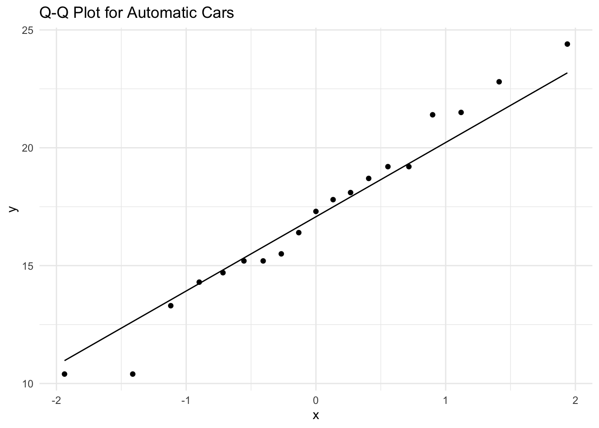

In this lab session, we will explore whether cars with manual transmissions have better fuel efficiency (mpg) than cars with automatic transmissions. We will use the mtcars dataset to:
The dataset includes:
mpg: Miles per gallon (fuel efficiency).am: Transmission type (0 = automatic, 1 = manual).hp) and weight (wt).library(tidyverse)
# Load the mtcars dataset and convert 'am' to a factor for clarity
data <- mtcars %>%
mutate(am = factor(am, levels = c(0, 1), labels = c("Automatic", "Manual")))
# Display the first few rows of the dataset
head(data)# Check the structure of the data to verify 'am' is now a factor
str(data)## 'data.frame': 32 obs. of 11 variables:
## $ mpg : num 21 21 22.8 21.4 18.7 18.1 14.3 24.4 22.8 19.2 ...
## $ cyl : num 6 6 4 6 8 6 8 4 4 6 ...
## $ disp: num 160 160 108 258 360 ...
## $ hp : num 110 110 93 110 175 105 245 62 95 123 ...
## $ drat: num 3.9 3.9 3.85 3.08 3.15 2.76 3.21 3.69 3.92 3.92 ...
## $ wt : num 2.62 2.88 2.32 3.21 3.44 ...
## $ qsec: num 16.5 17 18.6 19.4 17 ...
## $ vs : num 0 0 1 1 0 1 0 1 1 1 ...
## $ am : Factor w/ 2 levels "Automatic","Manual": 2 2 2 1 1 1 1 1 1 1 ...
## $ gear: num 4 4 4 3 3 3 3 4 4 4 ...
## $ carb: num 4 4 1 1 2 1 4 2 2 4 ...# Count the number of cars by transmission type
table(data$am)##
## Automatic Manual
## 19 13# Calculate summary statistics by transmission type
summary_stats <- data %>%
group_by(am) %>%
summarise(
count = n(),
mean_mpg = mean(mpg),
sd_mpg = sd(mpg)
)
# Display the summary statistics
summary_stats# Boxplot of mpg by transmission type
ggplot(data, aes(x = am, y = mpg, fill = am)) +
geom_boxplot() +
theme_minimal() +
labs(
title = "Boxplot of MPG by Transmission Type",
x = "Transmission Type",
y = "Miles per Gallon (MPG)"
)# Create separate data frames for automatic and manual cars
data_auto <- data %>% filter(am == "Automatic")
data_manual <- data %>% filter(am == "Manual")
# Q-Q plot for automatic cars
ggplot(data_auto, aes(sample = mpg)) +
geom_qq() +
geom_qq_line() +
ggtitle("Q-Q Plot for Automatic Cars") +
theme_minimal()
# Q-Q plot for manual cars
ggplot(data_manual, aes(sample = mpg)) +
geom_qq() +
geom_qq_line() +
ggtitle("Q-Q Plot for Manual Cars") +
theme_minimal()# Perform the t-test to compare mpg between automatic and manual cars
t_test_result <- t.test(mpg ~ am, data = data)
# Display the t-test result
print(t_test_result)##
## Welch Two Sample t-test
##
## data: mpg by am
## t = -3.7671, df = 18.332, p-value = 0.001374
## alternative hypothesis: true difference in means between group Automatic and group Manual is not equal to 0
## 95 percent confidence interval:
## -11.280194 -3.209684
## sample estimates:
## mean in group Automatic mean in group Manual
## 17.14737 24.39231# Display the 95% confidence interval for the difference in means
t_test_result$conf.int## [1] -11.280194 -3.209684
## attr(,"conf.level")
## [1] 0.95Since the p-value (0.00137) is less than the significance level (typically 0.05), we reject the null hypothesis. There is sufficient evidence to conclude that there is a significant difference in mean mpg between automatic and manual cars, with manual cars having better fuel efficiency on average.